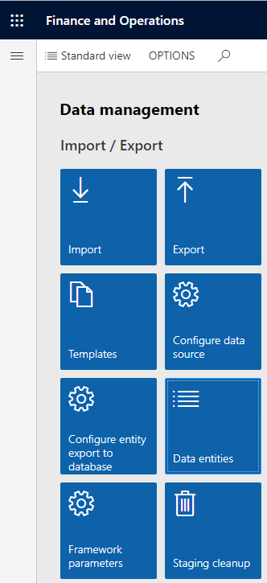
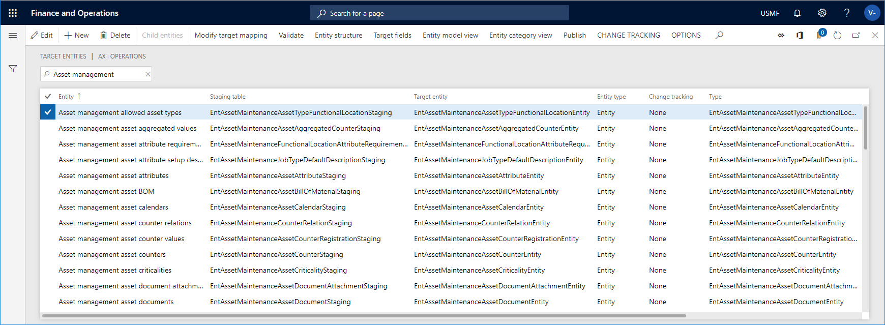
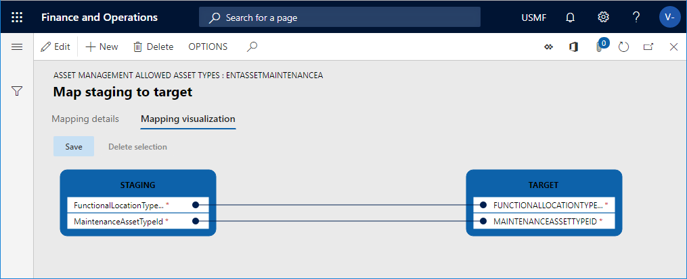

Zielentitäten
Important
Dynamics 365 for Finance and Operations hat sich zu speziell entwickelten Anwendungen entwickelt, mit denen Sie bestimmte Geschäftsfunktionen verwalten können. Weitere Informationen zu diesen Änderungen finden Sie im Dynamics 365-Lizenzierungshandbuch.
In Arbeitsbereich Datenverwaltung können Sie sich einen Überblick über Zielentitäten, zugehörige Entitätstypen und Staging-Tabellen zum Modul Anlagenmanagement verschaffen.
Klicken Sie auf die Schaltfläche Finance and Operations in der oberen linken Ecke des Bildschirms und klicken Sie auf Datenverwaltung.
Klicken Sie im Abschnitt Import / Export auf Datenelemente.

Suchen Sie auf der Seite Zieleinheiten nach „Anlagenmanagement“ im Filter und drücken Sie die Eingabetaste, um eine Liste der mit der Anlagenverwaltung verbundenen Einheiten anzuzeigen.
Die folgende Abbildung zeigt einige der Anlagenmanagement-Einheiten.

Wählen Sie eine Entität aus und klicken Sie auf Zielzuordnung ändern.
Auf der Seite Abbildung auf Ziel sehen Sie eine Liste der Staging-Felder, die sich auf die ausgewählte Entität beziehen. Klicken Sie auf Mapping-Visualisierung, um eine grafische Übersicht darüber zu erhalten, wie Staging-Daten und Zieldaten zusammenhängen.
In der folgenden Abbildung ist eine Visualisierung der Felder dargestellt, die sich auf die Einheit der Anlagentypen beziehen.
